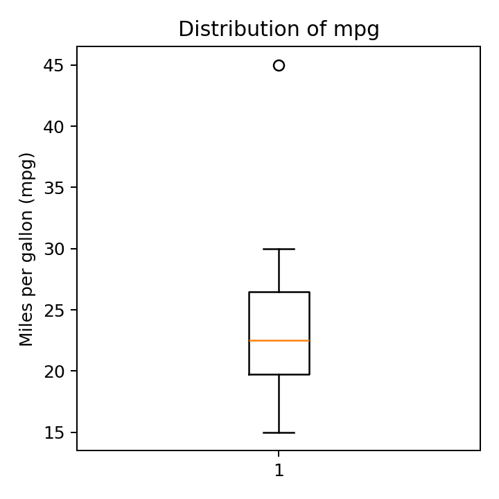

2.3 Python 实验
配套代码目录
第二章 / 2.3 Python 实验 / 代码 2.3.9-05
箱线图：概括位置与分散程度
这一块属于连续的 Notebook。请先运行前面的代码块；变量可能依赖前面的定义。全部数据均为教学用虚构数据。
代码 2.3.9-05
复制整块代码
fig, ax = plt.subplots(figsize=(4, 4)) ax.boxplot(mpg_demo) ax.set_ylabel("Miles per gallon (mpg)") ax.set_title("Distribution of mpg") fig.tight_layout() fig.savefig(image_dir / "239-box.pdf") fig.savefig(image_dir / "239-box.png", dpi=180) q1, median, q3 = mpg_demo.quantile([0.25, 0.5, 0.75]) iqr = q3 - q1 print(q1, median, q3) print(q1 - 1.5 * iqr, q3 + 1.5 * iqr) display(fig) plt.close(fig)
实际运行输出
19.75 22.5 26.5 9.625 36.625
实际运行图形

下载矢量图
下载完整实验 Notebook
下载本块 Python
上一块
下一块